Nyzo version 525 (commit on GitHub) adds to the client the ability to send transactions.
This version does not affect the verifier or sentinel. It only affects the client.
The amount of code in this version is substantial, and there are a number of areas that are still developing and require refinement. However, unlike the client or sentinel, this lack of refinement will not cause security issues or jeopardize in-cycle verifiers.
The ArgumentResult class is used to store validation information about arguments to client commands. This is used by the client to communicate validation issues to the user and allow correction of invalid arguments.
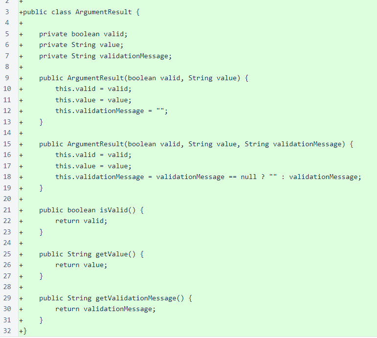The client loop has been reworked to allow validation and user confirmation of arguments for a command. The code is well-commented and explains how the looping works to allow editing when validation fails or the user chooses to edit the arguments at the confirmation step.
Note that this kind of rather complicated control flow is uncommon in the Nyzo codebase. If this were logic that affected the security of the system, like much of the verifier and sentinel code, it would be structured quite differently to make the code easier to verify. User interface code and security-sensitive code have very different goals and should be held to very different standards of evaluation.
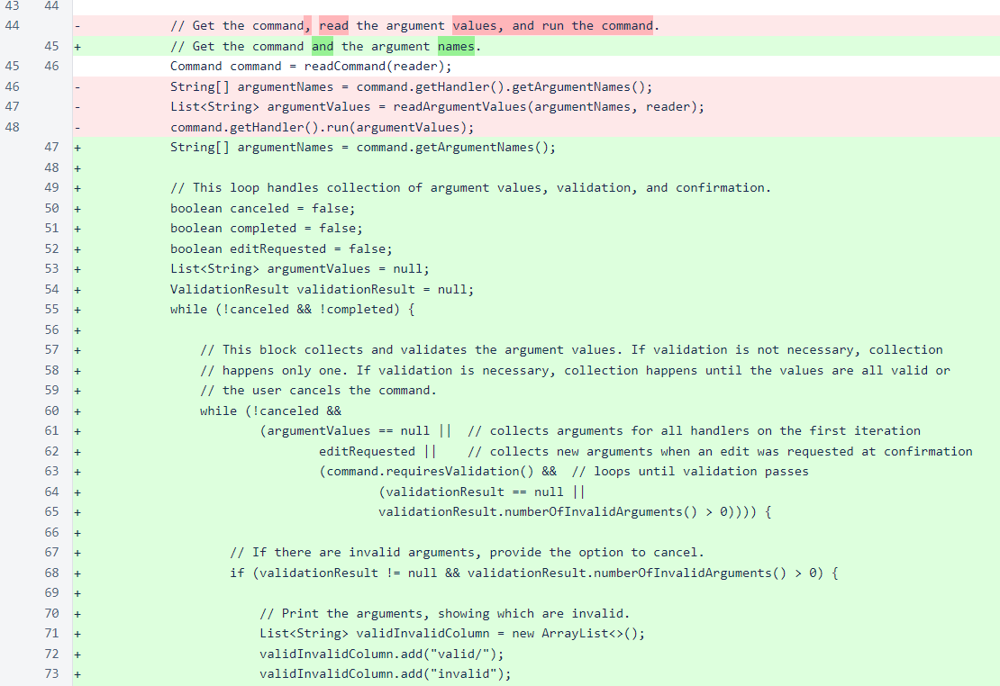The logic that selects a command has changed slightly to accommodate removal of the inCommandList property from commands. With the exception of a few system commands, this value would have always been true, so it was unnecessary clutter in the code.
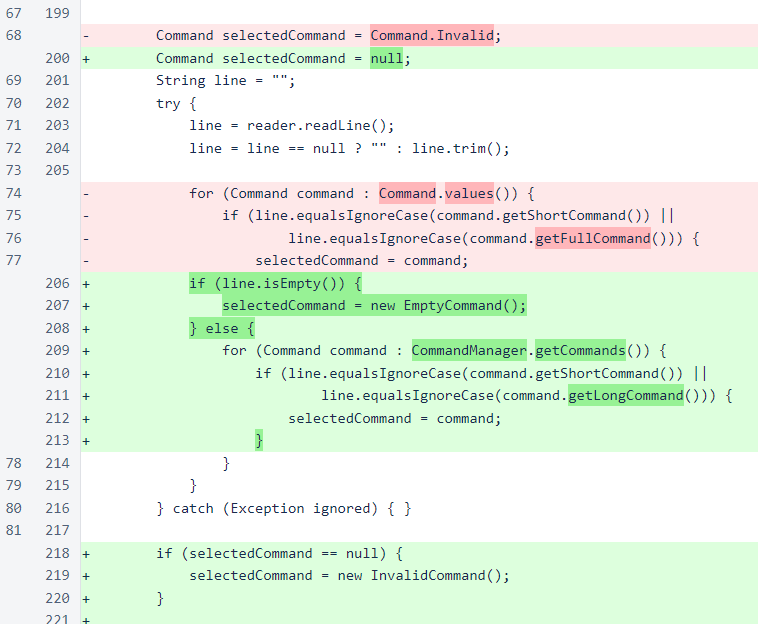The ClientDataManager now sends a single ping to prime the message system, and it also creates a new mesh-request message for each trusted entry point. These changes were both made to reduce rejection of messages due to message-replay protection on verifiers.
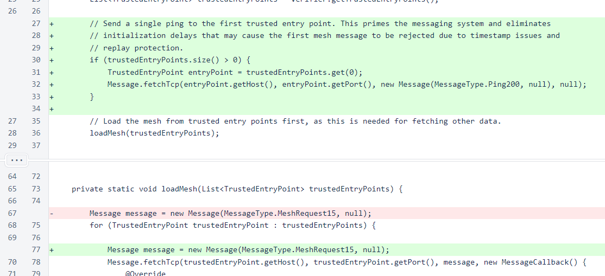The CommandManager class now organizes the commands for the client. Previously, the high-level design of commands in the client involved a Command enumeration, and each Command referenced a CommandHandler instance. While the enumeration of commands seemed superficially to be a good design, it led to a situation where command objects were unnaturally and arbitrarily split into commands and command handlers. This unnatural division was removed, and each command is now encapsulated in a single Command object that contains all information about a command. Also, the inCommandList property of a command has been eliminated in favor of simply omitting commands from the command manager's array of commands to exclude them from the list.
The current design allows for easy extension of the client's functionality. To add a new command to the client, first create a class that implements the Command interface. Then, add a new instance of the command to the commands array in CommandManager.
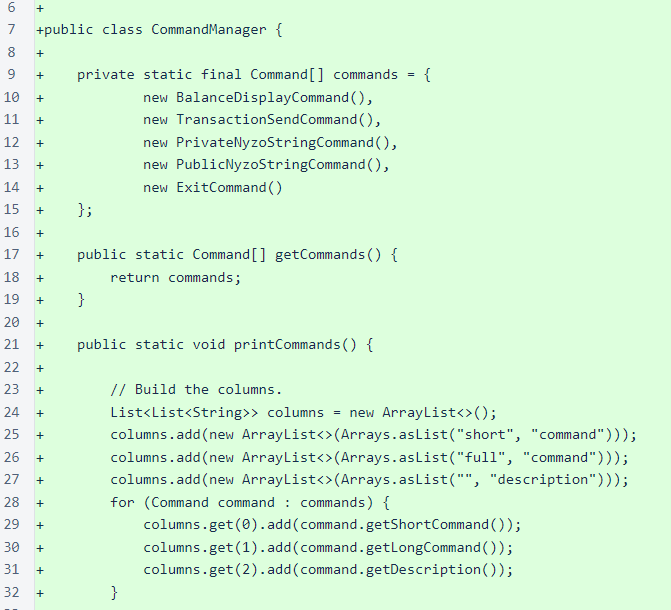In ConsoleUtil, color codes are now removed from length calculations that determine column widths. This allows text coloring to be applied to tables without affecting formatting.
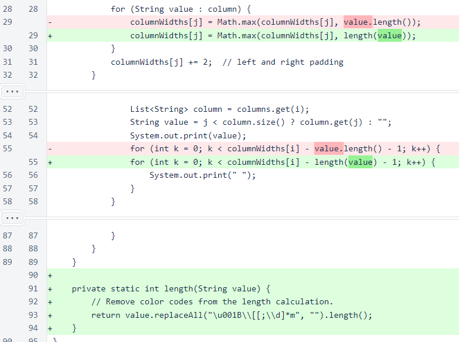All of the CommandHandler classes have been renamed as Command classes to reflect the new, flattened nature of the class design. The BalanceDisplayCommand now displays the Nyzo string of the wallet identifier in addition to the raw hex version. As time goes on, we plan to use Nyzo strings more frequently in place of raw hex strings.
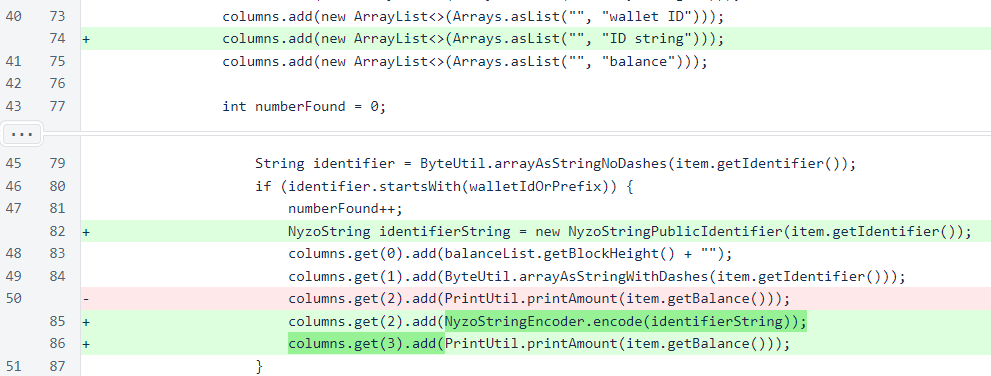The Command interface is used by all client commands. If requiresValidation() returns false, then validate() is never called and may return null.
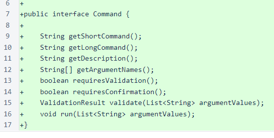The PrivateNyzoStringCommand creates Nyzo string private key and public ID strings from a raw hex private key seed.
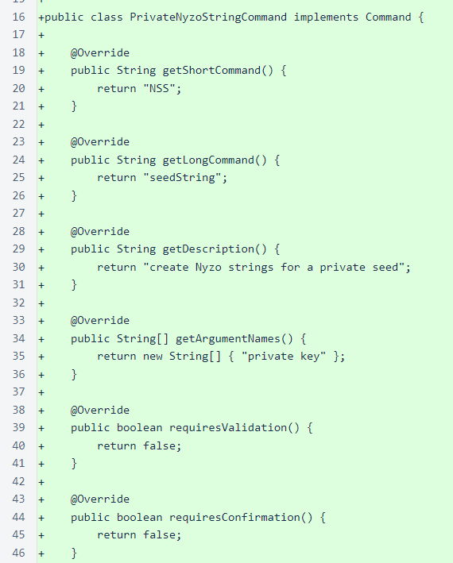The PublicNyzoStringCommand creates a Nyzo string public ID string from a raw hex public ID. This command warns the user about the possibility of losing coins if the ID specified is not in the frozen edge's balance list.
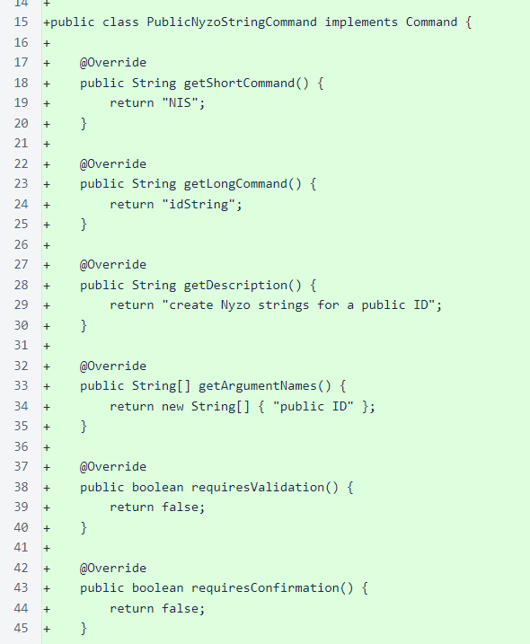The TransactionSendCommand allows the client to send transactions directly to the cycle. This is an important step in reducing the importance of the Nyzo web server and promoting decentralization. To reduce the probability of input errors, only Nyzo strings are accepted for the sender private key and receiver public ID.
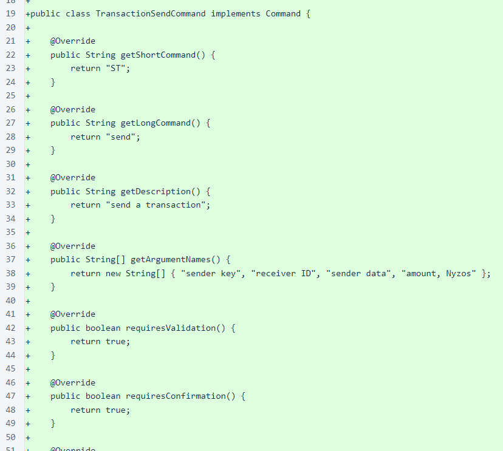The following shows a typical client session in which a transaction is sent. After client initialization, ST selects the command for sending a transaction. The command collects user inputs and asks for confirmation. After confirmation, the transaction is sent directly to the mesh. The transaction not accepted response is typical for later transactions, as the client continues sending transactions to verifiers until the block that should contain the transaction is received by the client. When the block that should contain the transaction is received by the client, a message is shown letting the user know if the transaction was included in the block.
This command will be refined in future versions. However, this implementation is reasonably efficient and reasonably reliable, and it is a solid first implementation of this functionality.
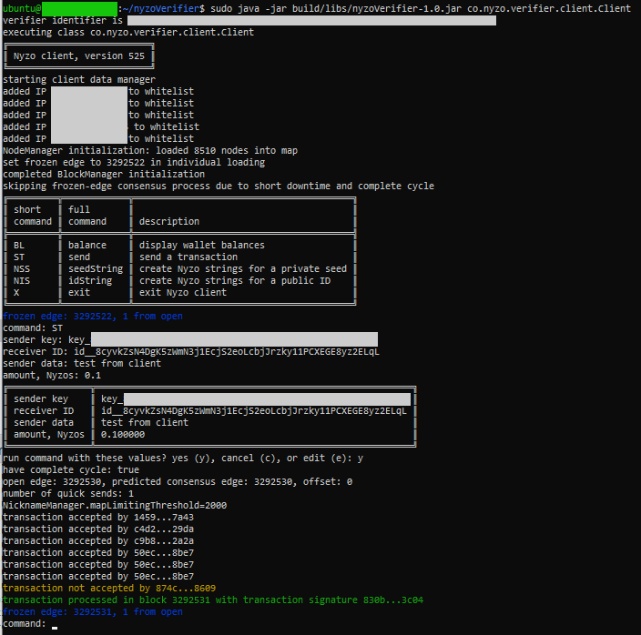